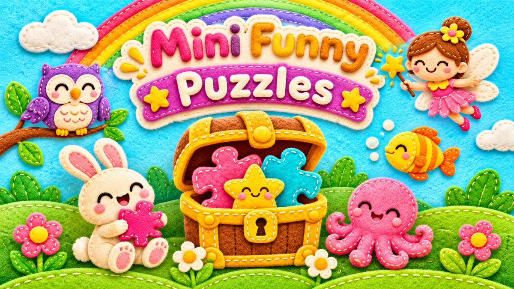

Scènes à formes à replacer
Place chaque personnage en feutrine sur sa silhouette correspondante et complète la scène pas à pas.
Jeu de puzzle pour enfants · iOS et Android
Un petit monde en feutrine rempli de puzzles simples pour les petites mains.
Mini Funny Puzzles est un jeu pour enfants avec un nouveau design joyeux en feutrine. Replace les formes, fais glisser la clé jusqu’à la boîte, découvre un petit memory et explore des scènes amicales comme Ocean Friends, Little Animals et Fairy Garden.
Nouveau design disponible sur Android ↓
Découvrir Mini Funny Puzzles
Le nouveau design en feutrine est déjà disponible sur Google Play pour Android. Sur l’App Store, la version actuelle pour iPhone et iPad conserve encore l’ancien design. La mise à jour iOS arrivera prochainement sur le même lien App Store.
La nouvelle direction artistique transforme le jeu en une boîte à jouets en feutrine, remplie de couleurs vives, de visages amicaux et de formes bien lisibles. L’objectif est de garder des interactions faciles à comprendre pour les enfants tout en rendant les scènes plus ludiques et plus soignées.
Place chaque personnage en feutrine sur sa silhouette correspondante et complète la scène pas à pas.
Profite de thèmes ludiques comme Ocean Friends, Little Animals, Fairy Garden, Funny Monsters et plus encore.
Retourne les cartes et retrouve des paires simples dans une présentation calme pensée pour les jeunes enfants.
Les achats intégrés et les actions externes sont regroupés dans la zone des parents.
Pour ouvrir la zone parents, il faut maintenir le bouton quelques secondes avant que l’action démarre.


Mini Funny Puzzles est pensé pour les enfants, tandis que la zone parents garde les actions liées au store à part. Des achats intégrés optionnels y sont proposés pour la version complète ou du contenu supplémentaire, et l’ouverture demande un court appui prolongé.
Sur Android, téléchargez dès maintenant la nouvelle version en feutrine sur Google Play. Sur iPhone et iPad, la fiche existante « Amazing Mini Puzzles Boxes » propose encore l’ancien design. La mise à jour iOS utilisera le même lien App Store.